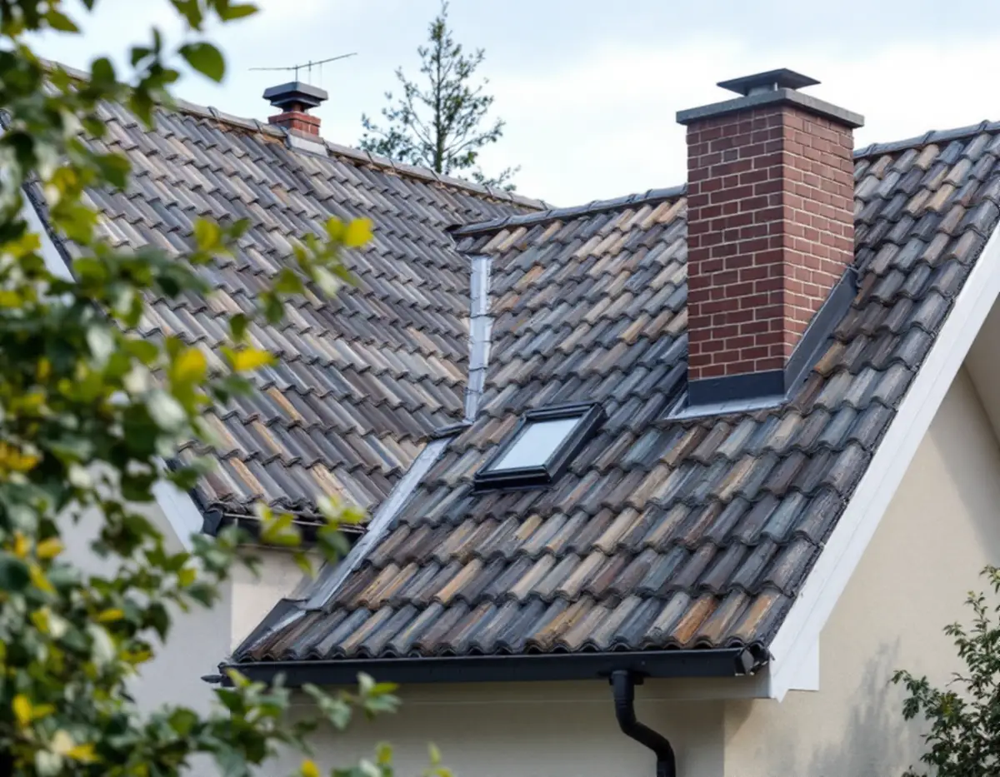
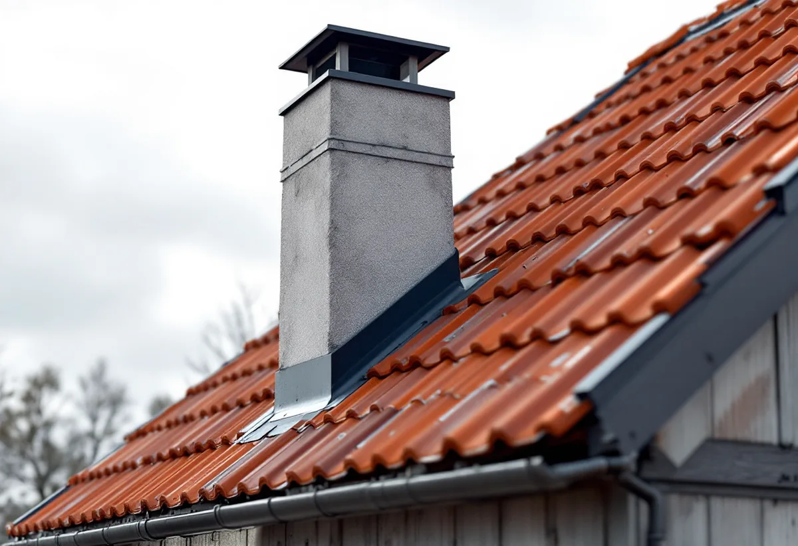
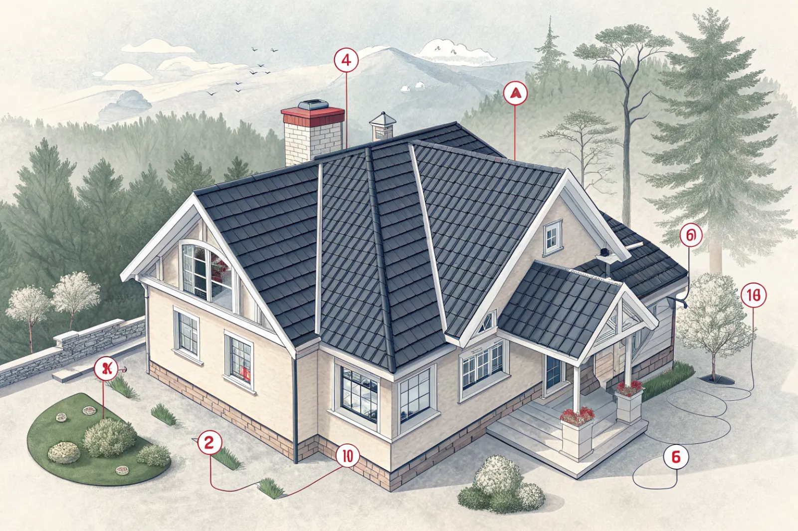
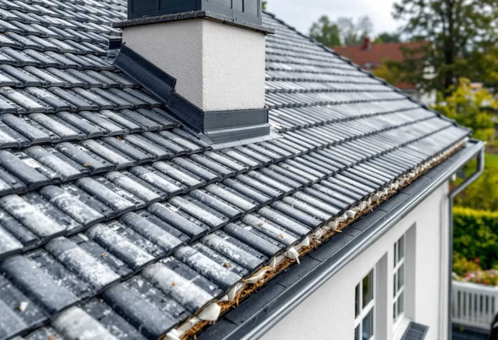

Bokning
Du berättar kort om huset, taket och vad du har sett. Vi bokar en tid som passar.

Att besikta taket är ofta det bästa första steget.
Beskriv jobbet kort.
Något blev fel. Kontrollera uppgifterna eller ring 08 12 410 276.
Vi tittar på jobbet på plats innan du får offert.
Du ser vad som ingår och vad det kostar.
Vi drar av ROT direkt och sköter ansökan.
Geal Entreprenad AB, Bromma. Org.nr 559303-7566.

Vi går igenom takets skick, riskpunkter och avvattning och ger dig ett tydligt underlag – innan du beslutar om renovering eller takbyte.
Utan en korrekt bedömning är det svårt att veta om ett problem kräver akut insats eller kan planeras längre fram. Många hör av sig efter att ha sett en missfärgning i undertaket, lösa pannor eller mossa på utsatta ytor.
En besiktning ger svar på om det är ett isolerat problem eller ett tecken på större belastning – och är ett bra underlag inför takbyte eller takrenovering.


Vi gör en samlad bedömning av skick, funktion och rekommenderad åtgärdsnivå, och dokumenterar fynden så att du kan prioritera rätt.
Vanliga fynd är otäta anslutningar, takläckage, begynnande fuktskador på vinden och slitna beslag.
Det bästa tillfället är innan problemen syns inomhus. En besiktning är särskilt värdefull i några lägen:
Är du osäker på hur gammalt taket är kan du jämföra med normal livslängd för olika material i vår guide om takmaterial och livslängd.
Du berättar kort om huset, taket och vad du har sett. Vi bokar en tid som passar.
Vi går igenom takytan, plåtdetaljer, anslutningar, avvattning och – om det går – vinden.
Vi dokumenterar fynden med foton och bedömer vad som är akut och vad som kan planeras.
Du får en tydlig rekommendation: service, renovering eller takbyte – och offert om du vill.
Tegel- och betongpannor: spruckna eller förskjutna pannor, frostskador, lösa nockpannor, mossa och påväxt samt skicket på underlagspappen där den syns. Läs mer om tegel, betong och plåttak.
Plåttak: rost, lösa eller otäta falsar, infästningar och skruvar, färgskikt och skarvar. Se även måla plåttak och falsat plåttak.
Detaljer på alla tak: skorstenens beslag och fogar, genomföringar, takfönster, hängrännor och stuprör samt taksäkerhet som stegar och snörasskydd.
Inför ett husköp görs ofta en överlåtelsebesiktning av hela huset. Den är okulär, och taket bedöms då i regel från marken och från vinden. Det räcker för att hitta tydliga brister, men säger mindre om hur länge pannor och underlagspapp håller och vad en åtgärd skulle innebära.
Vill du veta mer om just taket kan du komplettera med en takbesiktning. Då tittar en takläggare närmare på takytan, plåtdetaljerna och underlaget där det syns, och du får besked om taket behöver underhåll, omläggning eller byte inom överskådlig tid.
Var medveten om skillnaden: vi är takläggare, inte oberoende besiktningsmän. Vår bedömning är ett underlag för åtgärd och offert. Behöver du ett formellt protokoll till ett köpeavtal eller en tvist ska du anlita en certifierad besiktningsman.
Efter en storm eller en vinter med mycket snö och is är det klokt att besikta taket innan vårregnen. Lösa nockpannor, skadade plåtdetaljer och igensatta rännor upptäcks då innan de orsakar läckage.
Har skadan redan skett dokumenterar vi den med foton och beskriver vad som behöver åtgärdas. Underlaget kan du använda i kontakten med ditt försäkringsbolag – kontrollera alltid med bolaget vad de kräver.
Besiktningen slutar med en rekommendation. Den kan peka på någon av tre nivåer – och du bestämmer själv om och när du vill gå vidare.
ROT-avdraget gäller arbetet med själva åtgärden, till exempel omläggning eller takbyte. Läs mer om ROT-avdrag för takarbete.
Mellan besiktningarna kan du själv hålla koll på det mesta från marken och från vinden. Gå inte upp på taket själv – ett halt tak är farligt, och trampade pannor kan börja läcka.
Ser du något av punkterna i listan är det dags att låta en takläggare titta närmare. Läs mer om tecken på att taket behöver bytas.
Vi har kontor i Bromma och besiktar tak i hela Stockholm – bland annat i Bromma, Sundbyberg, Solna, Sollentuna, Danderyd, Täby, Nacka, Lidingö och Järfälla. Besiktningen är ett bra första steg innan du tar in offerter på takbyte eller takrenovering.
Bor du i Dalarna? Där besiktar vi tak via vår lokala partner – se takbesiktning och takbyte i Dalarna.
Vanliga signaler att hålla koll på.
Tecken på att taket behöver bytas →Orsaker, symptom och åtgärder.
Fuktskada och mögel på vinden →Lokala takläggare i Bromma och västerort.
Takbesiktning i Bromma →Eller ring 08 12 410 276, mån–fre 08–17.
Beskriv jobbet kort.
Något blev fel. Kontrollera uppgifterna eller ring 08 12 410 276.